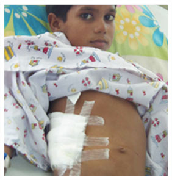

<!DOCTYPE html PUBLIC "-//W3C//DTD XHTML 1.0 Transitional//EN" "http://www.w3.org/TR/xhtml1/DTD/xhtml1-transitional.dtd">
<html xmlns="http://www.w3.org/1999/xhtml">
<head>
<meta http-equiv="Content-Type" content="text/html; charset=utf-8" />
<title>Transparent Hands Newsletter</title>
<link href='http://fonts.googleapis.com/css?family=Open+Sans' rel='stylesheet' type='text/css'>
</head>
<style>

	body{
		background-color:#99c3d1;
		font-size:12px;
		font-family:Arial, Helvetica, sans-serif;
	}
	.container{
	width:620px;
	height:auto;
	margin:0 auto;	
	background-color:#fff;
	}
	.header{
		background-image:url(images/header.png);
		background-repeat:no-repeat;
		width:621px;
		height:141px;
	}
	.logo{
		padding-top:30px;
		padding-left:20px;
		width:50%;
		float:left;
	}
	.header-txt{
		float:right;
		color:#fff;
		padding-right:20px;
		padding-top:10px;
	}
	.achievment{
		padding-left:10px;
		padding-right:10px;
		padding-bottom:30px;
	}
	.molty{
		background-image:url(images/moltyform-bg.jpg);
		background-repeat:no-repeat;
		width:100%;
		height:174px;
	}
	.molty-logo{
		width:50%;
		padding-top:20px;
		float:left;
	}
	.featured{
		padding-left:20px;
		padding-right:10px;
		padding-right: 20px;
	}
	.high1{
		background-image:url(images/pashas%20dinner.png);
		background-repeat:no-repeat;
		width:100%;
		height:173px;
		padding-left: 20px;
padding-top: 10px;
	}
		.high2{
		background-image:url(images/plax%20xdemo.png);
		background-repeat:no-repeat;
		width:100%;
		height:173px;
		padding-left: 10px;
padding-top: 10px;
margin-left: 39px;
	}
			.high3{
		background-image:url(images/pakistan%20conference.png);
		background-repeat:no-repeat;
		width:100%;
		height:173px;
		padding-left: 20px;
padding-top: 10px;
	}
		.high4{
		background-image:url(images/ceo%20club.png);
		background-repeat:no-repeat;
		width:100%;
		height:173px;
		padding-left: 10px;
padding-top: 10px;
margin-left: 39px;
	}
	.tech-txt{
		background-color:#0e161d;
		width: 95.3%;
height: 80px;
padding-left:20px;
padding-right:10px;
	}
	.health-area{
		padding-left:20px;
		padding-right:20px;
		padding-bottom:25px;
	}
	.contact{
		background-color: #30333C;
		padding-top: 10px;
		padding-left: 20px;
		padding-right: 20px;
		height: 112px;
	}
	.footer{
		width:620px;
	height:auto;
	margin:0 auto;	
	}
	.social-icon li{
		display:inline-block;
		margin-right: 5px;
	}
	.social-icon{
		margin-left: 146px;
	}
a {
color:#fff;
}
	
</style>
<body>
<div class="container">
<!--header goes here-->
	<div class="header">
    	<div class="logo">
        	
        </div>
        <div class="header-txt">
        	<p style="text-align:right; font-size:14px; padding-top: 3px;"><b>Newsletter</b> for <br />
				Friends of  <b>Transparent Hands</b><br />
               <span style="font-size:11px;position: relative;top: 11px;"> (Spring’ 2015)</span></p>
        
        </div>
    
    
    </div>

<!--header ends here-->

<!--achievment area goes here-->
<div class="achievment">
	<h1 style="text-align:center; color:#00a851;font-size: 21px;font-weight: normal;">Transparent Hands’ Endeavors & Achievements</h1>
    <p style="text-align:center;">It has been an enthralling journey for Transparent Hands as more than 180 patients <br />have been treated in a short span of time. It was made possible with the help of <br />teamwork and services rendered by panel companies and hospitals.<br /><br />It is no less than a privilege to have various renowned companies and educational institutes on<br /> board with us which are ready to collaborate with our noble cause.  These educational institutes<br /> and organizations include Iqra University, Master Molty Foam, Autogenie, Zigron, Jammin Java,<br /> Aitchison College, Tkxel, Subway and Punjab University.</p>


</div>
<!--achievment area end here-->

<!--molty form area start here-->
<div class="molty">
	<div class="molty-logo">
    	
        <p style="text-align:center; color:#fff;"><b>Molty Foam joins Hands <br />To Save Poor Patients</b></p>

    
    </div>
    <div style="float:left; width:50%; color:#fff; padding-top:23px;">
	<p style="font-size:14px;">The organizations in Pakistan are<br /> participating actively in playing their<br /> role in corporate responsibility. Molty<br /> Foam too joined hands with <br />Transparent Hands as an integral<br /> part of its corporate social responsibility.</p>
	
    </div>
</div>
<!--molty form area end here-->

<!--Featured Storie goes here-->
<div class="featured">
	
	<h1 style="color:#00a851;font-size: 24px;font-weight: normal;margin-top: 25px;">Featured Story!</h1>
    <p style="font-size: 13px;line-height: 23px;">Our Tahir is a tough young kid who has been <br />Struggling with Renal calculi for quite a long time.He used to go to school until he was diagnosed withthis problem, due to which he was made to quit his schooling. All the parameters of both of his kidneys are dilated with moderate hydronephrosis and shows reduced perfusion with significant resistance to urinary flow. His left kidney was working 29% only, while the right one was working 71%, all the parameters were disturbed. His stones were 10mm and 7mm in size causing a decrease in urinary flow. Tahir underwent a successful surgery on March 19 on which his right kidney was operated while the left one is yet to be done. His parents are now looking forward to his progress in studies, so that he could prove to be a source of pride for them when they grow old.</p>
</p>
<hr style="border-top: 1px dashed #ddd;border-bottom: 0px;border-right: 0px; border-left: 0px;" />

</div>
<!--Featured Storie end here-->

<!--Highlight area goes here-->
<div style="margin-top:20px; padding-left:20px; padding-right:20px;">
<h1 style="color:#00a851;font-size: 24px;font-weight: normal;">Highlights Of The Month</h1>

    <div class="high1">
    	<h2 style="color:#fff;font-size: 17px;">P@SHA’s Dinner</h2>
        <p style="color:#fff;">Transparent hands had the privilege of becoming a <br />part of pakistan software house association’s<br />  networking dinner. The dinner was held at Royal<br /> Palm Golf and Country Club.<br /><b>March 24, 2015</b></p>
    
    </div>
    <div class="high2">
    	<div style="padding-left: 167px;padding-right: 73px;">
    	<h2 style="color:#fff;font-size: 17px;">Plan X Demo Day</h2>
        <p style="color:#fff;">This year, planX, a project of Punjab Information Technology Board, hosted its first Demo Day in order to celebrate the<br /> startup culture of Pakistan. A number of notable personalities<br /> graced the event with their presence and transparent hands<br /> received an amazing response from all of the visitors.  </p>
    	</div>
    </div>
     <div class="high3">
    	<div style="">
    	<h2 style="color:#fff;font-size: 17px;">Change Pakistan Conference – Jumpstart</h2>
        <p style="color:#fff;">It was an overwhelming experience to be an integral part of<br /> Change Pakistan Conference hosted by Jumpstart Pakistan.<br /> The event highlighted numerous products and new initiatives <br />that have brought a recent digital revolution into the<br /> tech and business industry of pakistan. </p>
    	</div>
    </div>
     <div class="high4">
    	<div style="padding-left: 180px; padding-right: 73px;">
    	<h2 style="color:#fff;font-size: 17px;">CEO Club Corporate Lunch</h2>
        <p style="color:#fff;">CEO Rameeza Moin attended the Corporate CEO Lunch<br />  hosted by CEO Club Pakistan. More than 25 CEOs and Chairmans of different organizations were invited at the<br /> lunch. </p>
    	</div>
    </div>

</div>
<!--Highlight area end here-->

<!--tech juice area start here-->
<div class="tech">


</div>
<div class="tech-txt">
	<div style="float:left; width:32%;">
    	<h3 style="color:#fff; font-size:24px; font-weight:600;">Techjuice Circle</h3>
    </div>
    <div style="float:left; width:68%;">
    	<p style="color:#fff; padding-top:8px;padding-right: 20px;font-size: 11px;"><i>TechJuice hosted its first show called Techjuice circle which welcomed more than 100 likeminded entrepreneurs together on a platform in order to interact and engage for supporting entrepreneurial community.</i>  </p>
    </div>
</div>
<!--tech juice area end here-->

<!--health awarness alert area start here-->
<div class="health-area">
	<h1 style="color:#00a851;font-size: 24px;font-weight: normal;padding-top: 10px;">Health Awareness Alert</h1>
    <p style="font-size:14px; font-weight:bold;">Precautionary measures, that can avoid the occurance of kidney stones</p>
    <p style="font-size:14px; font-weight:bold;">Drink Plenty of Pure Water</p>
    <p>By drinking plenty of water, you get to dilute all the toxic substances into urine which will eventually pass on these substances from your body. This is the most effective and easy-to-follow process if one wants to avoid formation of kidney stones.</p>
    <p style="font-size:14px; font-weight:bold;">Get Enough Calcium</p>
    <p>Lack of calcium can cause the formation of tiny stones. To avoid this, make sure you get enough of calcium supplement.</p>
    <p style="font-size:14px; font-weight:bold;">Avoid Sodium-Enriched Diet</p>
    <p>Taking excessive sodium triggers kidney stones. Reducing your sodium intake can help in refraining from formation of stones. Sodium is also considered bad for the blood pressure level of the body.</p>
    <p style="font-size:14px; font-weight:bold;">Adopt Sanitary Habits</p>
	<p>Adopting sanitary habits can save you from a lot of trouble. It’s not just about kidney stones; bad sanitary habits can lead to various other illnesses as well. <br /><br />

In case you have something to share or contribute, you can always reach out to us through the information given on the website. We are open to your queries or any kind of information you are seeking.  </p>


</div>
<!--health awarness alert area end here-->

<!--contact area start here-->
<div class="contact">
		<p style="color:#fff; padding-left:50px; font-size:14px;">www.transparenthands.com</p>
		<div style="width:70%; float:left;margin-top: -11px;">
        	
            <p style="color:#fff; margin-left:48px; font-size:14px;line-height: 21px;">161- Ali Block Millennium Heights, Ground Floor,<br />New Garden Town,  Lahore, Pakistan.</p>
        
        </div>
        <div style="width:30%; float:left; margin-top:-11px;">
        	
            <p style="color:#fff; margin-left:48px; font-size:14px;">92 (42) 3584 1161 <br />92 (42) 3591 1124</p>
        
        </div>

</div>
<!--contact area end here-->

</div><!--container div ends here-->

<!--footer area start here-->
<div class="footer">
	<div class="social">
    	<ul class="social-icon">
        	<li><a href="#"></a></li>
            <li><a href="#"></a></li>
        <li><a href="#"></a></li>
        <li><a href="#"></a></li>
        <li><a href="#"></a></li>
        <li><a href="#"></a></li>
        <li><a href="#"></a></li>
        </ul>
    
    </div>
	<div class="subscribe">
    	<p style="text-align:center; color:#fff; line-height: 18px;font-size: 11px;">You have subscribed to this newsletter via<a href="#"> karrar.naqvi@zigron.com</a><br />
If you wish to unsubscribe, then Click Here and we promise to be very quiet
</p>
    </div>

</div>
<!--footer area end here-->
</body>
</html>
